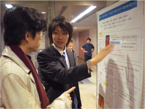

原 豪太郎

| 研究テーマ | 角度分解光電子分光を用いた単層系銅酸化物高温超伝導体の電子状態の研究 |
|---|---|
| 出身 | 山口県 |
| 卒業論文題目 | Low-Energy Angle-Resolved Photoemission Spectroscopy of an Underdoped High-Tc Superconductor Bi2Sr1.34La0.66CuO6+δ |
| 修士論文題目 | |
| 原著論文 | 準備中 |
| 国際学会 | |
| 国内学会 | 1. 学会名：日本物理学会 2009年・年次大会 題目：低エネルギー角度分解光電子分光による不足ドープおよび最適ドープBi2201の準粒子分散 場所：立教大学 (2009.3) ポスター発表 2. 学会名：PF研究会 題目：最適ドープおよび不足ドープBi2201の低エネルギー角度分解光電子分光 場所：高エネルギー加速器研究機構 (2008.12) ポスター発表 |